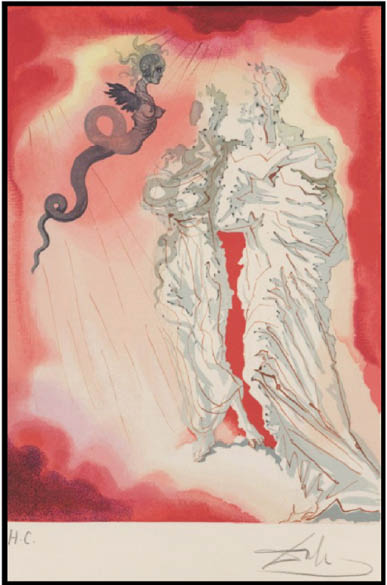

9 Nisan Pazartesi
Araf’ta ikinci gün
I
GİZEM’Lİ SEYAHAT
Duran, Gizem’in uzattığı eli tutarken, dökümlü, mavi, şeffaf bir elbise giymiş kızın ilahi bir güzelliğe sahip olduğunu düşündü. Az makyajlı hallerini görmek fırsatı bulduysa da sıfır makyajlı haline ilk kez rastlıyordu. Güzel kızın yüzde yüz natürel hali, genç adamı şaşırttı:
“Hiç makyaj yapmamışsın, buna rağmen o kadar güzel görünüyorsun ki...”
Genç adam cümlesini tamamlayamadı. Sözleri havada kaldı.
Gizem, delikanlıya yardımcı olmak için “Öyle mi?” dedi kadifemsi ses tonuyla. Duydukları hoşuna gitmiş ama utanmasına yol açmıştı. Biraz da bunun etkisiyle, elini genç adama uzattı ve tuttuğu parmak uçlarını hafifçe sıktı, başını öne eğip “Sen de bu giysinle tıpkı bir aziz gibi görünüyorsun” dedi.
Duran, üzerinde kırmızı bir elbise olduğunu ilk kez o an fark etti. Kızınkinin tersine, kendisinin kolları açıktaydı. Genç adam dikkatle bakınca, ikisinin üzerindeki giysilerin renk ve kesimlerinin farklı ama kumaşlarının aynı olduğunu düşündü.
Güzel kız biraz daha yaklaştı. Sol elini genç adamın beline doladı. Duran “Gizem’e bu kadar yakın durmak, bulutların üzerinde olmak gibi” diye düşündü.
“Öyle yaklaştın ki son esenliğe!” dedi o düşünürken Gizem.
Duran, güzel kızın sözlerinin devamını ezbere biliyordu. İlahi Komedya’dan bir cümle fısıldamıştı çünkü Gizem kulağına. Şimdi de “gözlerinin bilenip keskinleştiğinden” söz edecek, geride neler bıraktığını düşünmesini isteyecekti.
Tam da Duran’ın beklediği gibi oldu.
Genç adam kendisini, güzel kızın isteğini yerine getirmekle görevlendirilmiş gibi hissetti. Gözleri bilenip keskinleşmişti, bu durumda, geride neler bıraktığını düşünmeye başlayabilirdi.
Zevk için birbirine saldırttıkları boğaların, ayıların, köpeklerin, horozların kanında boğulan insan müsveddeleri... Açlıktan, susuzluktan, ilaçsızlıktan ölenlerle aynı dünyayı paylaştıklarını bildikleri halde, otuz milyon doları otuz saniyede kaybetmek ya da kazanmaktan zevk alabilen cibiliyetsiz kumarbazlar... Ulaşmaya çalıştıkları sözde ilahi güçten, cahilce ve aptalca inançları nedeniyle her gün daha fazla uzaklaşan sözde dindarlar... Karanlığa terk edildikleri için birer canavara dönüşen çaresiz oğlan çocukları... Minicik bedenleri hoyratça kullanılarak, maddi ve manevi anlamda bir limon gibi sıkılarak tüketilen kız çocukları...
Genç adam, zihninden ışık hızıyla geçen bu kahredici manzaralar nedeniyle terlemeye başladı. Ter giderek yoğunluğunu ve sıcaklığını artırdı. Yoksa, içinde yüzdüğü bir kan deryası mıydı? Kırmızı elbisesini çıkarıp vücudunun her yanını kurulamak, kendini kandan temizlemek istedi. Kolunu Gizem’in omzundan çekti. Ve o anda Kara Şeytan’ı karşısında buldu.

Refleksi yardım edip başını biraz geriye doğru çekmemiş olsa, belden aşağısı yılanı andıran tuhaf yaratığın küçük ve dik memeleri yüzüne çarpacaktı.
“Kara Şeytan” dedi gayriihtiyari Duran. Bir adım geri çekildi. Pek de uzaklaşamamıştı iğrenç yaratıktan. Ataktı düşmanı. Süratli kanatlarını kullanmış, soluğunu yüzünde hissettirmişti yeniden.
Neyse ki Gizem yanındaydı. Duran, bu kez korkuyla sarıldı güzel kıza. “Kara Şeytan Yassıada’dan bu yana bizi takip ediyor olabilir mi Gizem?” diye sordu.
Güzel kız başını salladı. “Evet, o her yerde” dedi ve der demez sırra kadem bastı.
Duran, güzel kızı tekrar görebilmek için etrafa bakınca, bu kez de bir grup zebaniyle çevrelenmiş olduğunu gördü. “Yalancılar!” diye haykırdı. Sığınmak için, telaş ve korku içinde Gizem’i aradı. Bulamadı. Önündeki tablo değişmişti. Kara Şeytan yerini en büyük organı dili olan bir hilebaza bırakmıştı. Çirkin yaratık sıkışmış olduğu kayalardan kendisine ebleh, şaşkın, korkak gözlerle bakıyordu.
“Ama bunlar” diye düşündü Duran, “tıpkı az önce Gizem’in yanındayken gördüğüm Kara Şeytan gibi. Sanki aynı fırçanın ürünü gibiler.”
Genç oyuncu, İlahi Komedya’dan fırlayıp birer birer karşısına dikilmeye başlayan karakterlerin Dali’nin çizgileri olduğunu o an fark etti.
İşte az ileride, tiyatrodan birkaç arkadaşıyla Burak, bir tablonun değerlendirmesini yapıyordu. Kulak misafiri oldu. Topluluk, Dali’nin kendisinden önceki hangi ressamlardan esinlendiğini konuşuyordu. “Bu konu daha çok tartışılır” diye düşündü genç adam.
Biraz yürüdü... Gözlerine inanamadı... Bu da ne demekti şimdi!
Karşıda gördüğü Gizem değil miydi? Aşırı iddialı giyim ve makyajıyla ne arıyordu orada?
Güzel kız, burnunun dibine kadar girmiş olan Cebrail’e bir şeyler anlatıyordu.
Duran, içinde Gizem ve Cebrail’in bulunduğu gruba yaklaştı. Onlar da tıpkı az önce Burak ve ötekiler gibi, pano haline getirilmiş Dali tablolarından biri üzerine laflıyorlardı.
“Az önce Gizem’le birlikte değil miydim peki?” diye düşündü Duran.
Gerçekten de az önce kendisinin üzerinde kırmızı, onun üzerinde mavi şeffaf elbiseler yok muydu?
Birlikte Kara Şeytan üzerine konuşmamışlar mıydı?
Sahi, Kara Şeytan nereye gitmişti bu arada?
Beş Çayı
Ter içinde gözlerini açtı Duran, nerede olduğunu bir türlü hatırlayamıyordu. Ya az önce bulunduğu yer neresiydi? Cennet miydi, cehennem mi? Elini tutan ve yolunu bulmasına yardımcı olan o güzel kız kimdi? Gizem miydi, Beatrice mi?
Bilinci yavaşça geri gelmeye başladı. Ne cennete ne de cehenneme gitmişti. Rüyasında, Tophane-i Amire’de olduğunu görmüştü o kadar. İki ay kadar önce ziyaret ettiği sergiyi, başrol oynamak üzere çalıştığı İlahi Komedya ve son birkaç gündür yaşadığı olaylarla karıştırınca, rüyası bir kâbusa dönüşmüş olmalıydı.
Birkaç saniye daha geçince, kan deryasının ortasında değil ter içinde kaldığına iyice ikna oldu. Başını yastıktan kaldırdı, giydiği kırmızı şeffaf elbise gitmiş, yerine krem rengi bir pijama gelmişti.
“Hay Allah” diye düşündü, “bu pijama da nereden çıktı şimdi?”
Duran yatağında doğrulunca, kendi odasında olmadığını fark etti. Endişe içinde kalktı, pencereye doğru yürüyüp perdeyi açtı. Muhteşem bir yüzme havuzunun üzerinden Durusu Gölü’nü, onun üzerinden de Karadeniz’i gördü. Şaşırdı. Demek hâlâ Erdoğan Bey’in çiftliğindeydi.
Nasıl olmuştu da bu odaya gelmişti? Üzerindeki pijamayı giymesine kim yardım etmişti?
Başından geçenleri geriye doğru hatırlamaya çalışınca, aklına ilk olarak bahçeye kurulmuş kahvaltı masası geldi. Dört kişiydiler. Kahvaltılarını tamamlamış, keyif kahvelerini içiyorlardı. Hatırlayabildiği son konuşma kendisine aitti. Ardından az önce gördüğü rüya gelmişti. Arada ne olduğunu hatırlayamıyordu. Bir biçimde bu odaya getirilmiş, pijamaları giydirilmiş ve yatağa yatırılmış olmalıydı.
Diğerleri ne yapmıştı acaba? Burak ve Gizem neredeydiler? Evlerine dönmüş olabilirler miydi?
Duran, bütün bu soruların cevabını almak için Erdoğan Bey’i bulması gerektiğini düşündü. Her şeyden önce giyinmeliydi. Etrafa bakındı, elbiseleri yoktu. Çekmecelerin ve dolapların içleri de dahil olmak üzere odayı didik didik aradı, elbiseleri sırra kadem basmıştı. Odaya bağlı banyo var mı diye baktı. Bulamayınca, otel işi havlu terlikleri ayağına geçirdi, üzerindeki pijamayla dışarı çıktı.
Bir sürü odanın açıldığı geniş sahanlıktan geçtiğini hatırlamadı. “Geçmiş olsam, şu heykeller ve tablolar mutlaka dikkatimi çekerdi” diye düşündü. Birkaç adım attı, aşağıdan sesler geliyordu. Merdivenlere doğru ilerledi. Yaklaştıkça, arkadaşlarının ve Erdoğan Bey’in sesi daha kuvvetli gelmeye başladı.
Merdivenlerden inerken duvarları süsleyen tabloları inceledi. Bir müze görünümüyle, binanın içi de en az dışı kadar etkileyiciydi.
Duran, duvarlarda bulunan tabloların farklı türlerden, etrafa serpiştirilmiş obje ve heykellerin değişik akımlardan olduğunu düşündü. Anlaşılan, Erdoğan Bey belli bir sanatçı ya da türe değil, güzel bulduğu her sanat ürününe ilgi duyuyordu. Bu eserlerden bazıları, tabii eğer kopya değillerse, bir hayli eski dönemlerden kalmaydı ki bu da adamın aynı zamanda bir eski eser biriktiricisi olduğunu gösterirdi.
“Tam” diye düşündü Duran, “eğer babadan kalma bir servetle yapılmıyorsa, otuz saniye içinde otuz milyon dolar kazanıp kaybetme imkânına sahip olanlara göre bir zevk.”
Ayağına geçirdiği yumuşak terlik ve gıcırdamayan merdivenler sayesinde, aşağıya gürültüsüz inmeyi başardı. Şimdi konuşmaları daha iyi duyabiliyordu. “Havadan sudan konuşmalar” dedi kendi kendine.
Gruba yaklaşınca, Burak ve Gizem’in üzerinde de pijamalar olduğunu gördü. Bu durumda kendisini göstermesinin bir sakıncası yoktu.
“Pijama partisi mi yapıyoruz?”
Duran’ın seslenmesini ilk cevaplayan Erdoğan Bey oldu:
“Kimleri görüyorum. Hoş geldiniz beyefendi.”
Ev sahibinin ardından Gizem ve Burak da genç adama “Hoş geldin” dediler ve kendileri gibi pijama giymiş olduğu için onunla şakalaştılar.
Erdoğan Bey “Lütfen oturun Duran Bey” diyerek yer gösterdi.
Genç oyuncu rahat koltuğa oturur oturmaz konuya girdi:
“Birisi bana neler olduğunu anlatabilir mi?”
Genç oyuncunun sorusu, az önce şen kahkahalar atılan ortama bir dinamit gibi düştü. Burak ve Gizem’den ses çıkmayınca, Erdoğan Bey durumu özetlemeye karar verdi:
“Sabahleyin yorgun argın çiftliğe geldik. Kahvaltımızı ettikten sonra yatıp biraz dinlenelim dedik. Gece uyumadığımız ve sabah da iki büyük gerginlik yaşadığımız için, ipin ucunu kaçırmışız anlaşılan. Bize dört beş saat yetti. Siz ise, tam altı saattir uyuyordunuz. Şimdi de beş çayımızı içmek için buradayız.”
Erdoğan Bey açıklamasını yaparken, Duran önceki geceyi ve üzerlerine bir kâbus gibi çöken sabahı hatırladı. Kız çocuğunu düşmüş olduğu batakhaneden kurtarmak için gece boyu uykusuz kalmış, ardından Tepebaşı’nda tam bir savaşın orta yerine düşmüşlerdi. Hafızası, gözlerinin önünde yanan iki insanı geri çağırdı. Nasıl da unutmuştu bütün bunları? Birden güzel kıza döndü:
“Dizkapakların ne durumda Gizem?”
Duran’ın sorusu üzerine genç kız pijamasının paçalarını sıyırdı. Açık yaraların üzerine tentürdiyot ve yara merhemi sürülmüştü.
“Sabahleyin Erdoğan Bey’in yardımcısı sıyrıkları temizleyip üzerlerine yara merhemi sürmüştü. Duş aldıktan sonra ben de aynısını yaptım. Bu arada baktım, derin bir şey yok. İz bırakacağını sanmıyorum. Bir karış daha ileride dursam, koca panzerin altında kalacakmışım. Şansım varmış.”
Genç adam Gizem’i dikkatle dinledikten sonra “Haklısın. Gerçekten de şansın varmış” dedi. Ardından, kendisi açısından her şeyin tam olarak çözülmüş olmadığını düşündü. Hâlâ karanlıkta kalan bazı noktalar vardı:
“Uyuduğum odaya nasıl çıktığımı biliyor musunuz?”
Genç adamın bu sorusu gülüşmelere yol açtı. Sorunun cevabını en iyi bilen Burak anlatmaya koyuldu:
“Daha masadayken uyumaya başladın dostum. Koluna girdim ve odana çıkmana yardımcı oldum. Bu arada boxer giydiğini öğrendim. Rengini çok beğendiğimi itiraf etmeliyim. Anlayacağın, pijamalarını giymene ben yardımcı oldum. Zar zor da olsa kendini yatağa attığından emin olduktan sonra odama çekildim.”
Genç oyuncu masada uyuklamaya başladığı anı hatırladı. Kelimelerinin kaymaya başladığı da gözlerinin önüne geldi. “Peki” dedi, “elbiselerim nerede?”
Duran’ın sorduğu soruyu Burak değil Erdoğan Bey cevapladı.
“Berbat bir gece ve sabah geçirdiğimiz için, yardımcılarımdan herkesin elbiselerini ve ayakkabılarını temizlemelerini istedim. Şimdi odanıza konmuştur hepsi.”
Duran bütün sorularına cevap alınca rahatladı. Karanlıkta kalan hiçbir şey yok gibiydi. Masada uyuyakaldığına göre, bütün bir gece uykusuz kalmak fazla gelmiş olmalıydı. Bu tür bir durumun başına ilk kez geldiğini söyleyerek herkesten özür diledi.
Burak ve Gizem gerginliğin giderilmiş olmasına sevindiler.
Erdoğan Bey servis yapmak için hazır bekleyen yardımcılarından çayı getirmelerini istedi. Servis arabasının üzerinde gelen tatlı ve tuzlu kurabiyeler, kekler, börekler çok davetkâr görünüyordu. Ev sahibi tıpkı kahvaltı masasında olduğu gibi, iftiharla küçük bir açıklamada bulundu:
“A’dan z’ye kendi üretimimiz. Sadece çay bizim arazimizden değil.”
Öğlen yemeğini atlamış oldukları için, gençler sıcaklığını muhafaza eden kurabiyeler ve buharı tüten böreklere büyük ilgi gösterdiler.
Sonra, Erdoğan Bey konuklarına çiftliği gezmeyi teklif etti.
Gizem ve Burak derhal çok memnun olacaklarını ifade ettiler. Bu durumda, Duran da teklifi kabul etmek zorunda kaldı.
“Öyleyse” dedi Erdoğan Bey, “gidip elbiselerinizi giyin ve geri dönün. Pijamayla beş çayı içebilirsiniz ama süt sağıp domates toplayamazsınız. Yarım saat sonra tekrar burada buluşalım.”
Pisani Evinde
Duran odasına çıktığında, elbiselerini yıkanmış ve ütülenmiş buldu. Cüzdanı, anahtarları, telefonu ve İlahi Komedya’sı da tertipli bir şekilde elbiselerinin yanına konulmuştu. Eşyalarının içinde telefonunu görünce, aklına annesi ve babasını tümüyle unutmuş olduğu geldi. Hemen aramalıydı. Telefonunu eline alır almaz “Lanet olsun!” dedi.
Küçük kızı batakhaneden kurtarmak için karanlık odada beklerlerken aleti sessize almış ve içine girdikleri kargaşa nedeniyle sesi açmayı akıl edememişti. Bu nedenle telefonunda, ezici kısmı anne ve babasından olmak üzere sayısız miktarda cevapsız çağrı vardı. Böyle olunca, Duran, kendisini zamana dair bir hesap yapmak zorunda hissetti. Evde yenilen büyük yemeğin üzerinden neredeyse bir tam gece ve bir tam gün geçmişti.
“Yani, neredeyse yirmi dört saat” diye söylendi genç adam. Ne diyecekti şimdi annesine? Karşısına önce babasının çıkması için bildiği bütün duaları ederek telefonun tuşlarına bastı. Ne yazık ki dileği kabul olmamıştı.
“Alo” der demez, annesi kasırga gibi esip gök gibi gürlemeye başladı.
“Allah belanı kaldırsın Durante Pisani! Bizden çabucak kurtulmak için mi böyle yapıyorsun? Kalp krizi geçirip ölelim istiyorsun değil mi? Baban ve ben polise haber vermek için evden çıkmak üzereydik. İstanbul’da acil servisini aramadığımız hastane kalmadı!”
Duran annesinin makineli tüfek misali konuşmasını bölüp, telefonu sessize almış olduğunu, sonra da eski haline getirmeyi unuttuğunu bir türlü söyleyemedi. Kadının dakikalarca süren bağırışını can sıkıntısı içinde dinledi.
Bağırmaktan helak olan Bayan Pisani, söylemek istediklerini tükettiği için değilse de yorgun düştüğü için sustu. Duran bütün gücünü topladı ve “Telefonumu sessizde unutmuşum, özür dilerim madre” dedi.
Genç adam takip eden cümlelerinin içine usturuplu bir şekilde, şehir dışında olduğunu ve ne zaman dönebileceğini tam bilmediğini de sıkıştırdı.
Bayan Pisani “Ne halin varsa gör!” diyerek telefonu hemen yanında durduğu anlaşılan babasına uzattı.
Bay Pisani telefonu alır almaz “Çok korktuk oğlum. Tarotta ne çıktığını o akşam sana anlatamamıştım ya hani, korkumuzun nedeni oydu işte” dedi.
Titrek cümleleri, yaşlı adamın cidden korkmuş olduğunun kanıtı gibiydi.
Duran babasının ses tonu ve söylediği sözler üzerine Paskalya’dan önceki akşama, yani ayın 7’sine geri döndü. Yassıada’da katıldığı şeytan ayini ve Sirkeci’de uğradığı bıçaklı saldırının gecesinde, babası ve annesini tarot kartlarının karşısında oturur halde bulduğunu hatırladı. O gece geçen konuşmalar üzerine tekrar düşündü. Ürperdi.
Babası, annesinin isteği üzerine açtığı tarotta şeytanı gördüğünü söylemiş ama asıl meselenin şeytanı izleyen kartlarda olduğuna vurgu yapmıştı. Genç adam o gece babasının cidden paniğe kapılmış olduğunu hissetmiş, bundan büyük tedirginlik duymuştu. Sonra nasıl olduysa, korkusu da dahil olmak üzere her şey aklından çıkıp gitmişti. Demek babası hâlâ, kendisinin çoktan unuttuğu o tarot açılımının tesiri altındaydı.
Duran o geceyi düşünmeye devam edince, babasının annesine ve kendisine korkuyla “Ayrıntılara giremeyeceğim için beni mazur görün...” dediğini de hatırladı. Yaşlı Pisani söylediği gibi yapmış, o gece başka hiçbir şey söylememişti. Ama şu anda gerçekleştirdiği konuşmadan bile, Bay Pisani’nin o geceki ruh halini aynen sürdürdüğü belli oluyordu.
Babasının tedirgin sözleri üzerine, genç adam kendisini iyice kötü hissetti. Sanki içinden bir şeyler kopup gidiyor gibiydi. Kulağında telefon, sıkıntıdan ne yapacağını bilemez halde öylece durup kaldı. Genç oyuncu, babasının içinde bulunduğu durumdan doğal olarak kendisini sorumlu tuttu. Acaba telefonunu sessizde unutmayıp arada bir konuşsa, bu panik hali yine de sürer miydi? Bir ara babasına “Yanında olmadığım ve seni telefonla aramadığım için kendini böyle hissediyorsun” demeyi düşündüyse de vazgeçti.
Ömrüyle karşılaştırıldığında uzunca sayılacak bir süre İtalya’da okumuş, annesi ve babasıyla aylarca görüşmediği, günlerce telefonla konuşmadığı zamanlar olmuştu. Bu nedenle, babasının tedirginliğinin bir gece aramamakla ilgili olmadığını gayet iyi biliyordu. O düşünmeye devam ederken, Bay Pisani “Beni dinliyor musun oğlum?” diye sordu. Duran “Evet padre” deyince devam etti: “Şimdi bana dikkatini ver ve söyleyeceğim sözleri can kulağıyla dinle!”
Genç adam babasının bu sözleri üzerine “Olur padre” dedi.
“Duran, kartlarda gördüğüm şuydu: Sonu hiç de iyi olmayacak bir yolda ilerliyorsun... Bir bataklığın içindesin ve giderek batıyorsun... Evet oğlum, o gece art arda gelen kartlar böyle söylüyordu... Çıkışı olmayan bir yol bu oğlum... Lütfen dikkatli ol!”
Yaşlı babasının son söylediklerini, birkaç gündür başından geçen olayları ve az önce gördüğü rüyayı bir araya getirince, genç adam kendisini iyice kötü hissetti. Nasıl davranması gerektiğini bilemedi. “Anladım baba” dedi. Ardından bir arkadaşının çiftliğinde olduğunu, merak etmemesini, dikkatli olacağını söyledi ve telefonu kapattı.
Yaptığı telefon konuşması genç adamın elinin ayağının tutmaz olmasına yol açmıştı. Bir süre kendine gelemedi. Sonra saatine baktığında, aşağıya inmek için sadece on beş dakikası kaldığını gördü. Giyinmeden önce bir duş almalıydı. Pijamalarını çıkardı, kendisini duşun altına attı.